Build recognition that actually reaches the factory floor.
The numbers made the case impossible to ignore:
“If the recognition program can't reach the factory floor, it isn't a recognition program.”
You cannot design for a factory floor from an office.
We followed a rigorous five-stage design thinking process - empathize, define, ideate, prototype, test. Field research and interviews on the factory floor surfaced three defining constraints:
- Limited tech access - no personal phones or computers are allowed during shifts, making digital-only initiatives inaccessible by design.
- Tangible recognition matters - a physical token of appreciation is seen as more meaningful, a proud and visible reminder of achievement.
- Generic feels impersonal - company-wide emails feel distant and lack the sincerity of a personal thank you.
Contextual inquiry on the shop floor - not in a conference room - shaped every decision that followed.
The Phygital Appreciation Card - one gesture, two worlds.
- Physical - a tangible, high-quality card, hand-delivered by the manager as a personal token of thanks.
- Digital - a unique QR code opening a mobile-friendly portal with a personalized message and instant reward redemption.
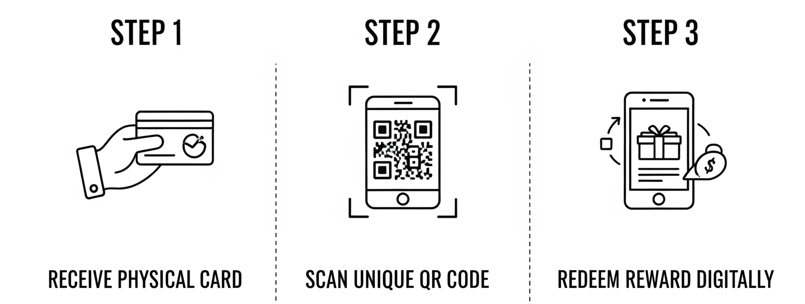
The employee journey is deliberately simple: a manager personally presents the card; during a break the employee scans the QR code; the portal opens with the message and an instantly claimable reward.
The card itself - designed like something worth keeping, not a flyer. The front carries the congratulations and the award; the back carries the QR code, the points value and plain three-step instructions. Two colourways, themeable to each company's brand.
The Acme Card - a wallet-sized companion for reward points. A QR code on the back gives one-scan credit, and a printed PIN acts as the fallback for anyone without a smartphone or a signal - co-branded for each client:

Front and back of the co-branded points card. Scan the QR, or type the PIN into "Add Acme Card" - every path leads to the same reward.
Sample editions - the same card system, re-themed for different occasions and client brands. The face changes; the QR + PIN redemption on the back never does:


Three sample editions from the card library - festive reward, celebration print and gift voucher.
The rollout was designed as carefully as the product: manager training to turn leaders into champions of recognition, employee communication through posters and team huddles, and controlled distribution with HR managing card inventory for a smooth, fair process.
Test the flow first; polish the pixels after.
Wireframes & prototypes - initial lo-fi explorations tested the scan → log in → redeem journey with real employees before any visual design began:
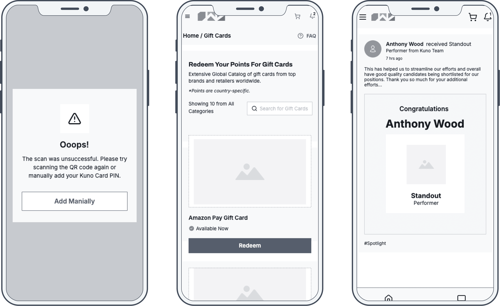
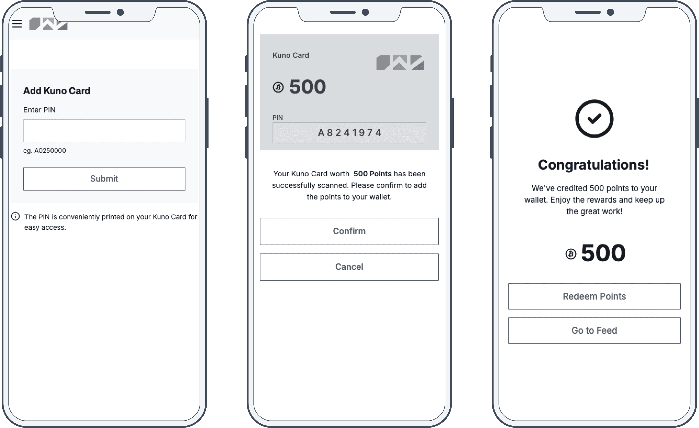
Once the flow held up on paper, the shipped screens kept the same skeleton - just dressed in the reward platform's language. Here's the journey, step by step:
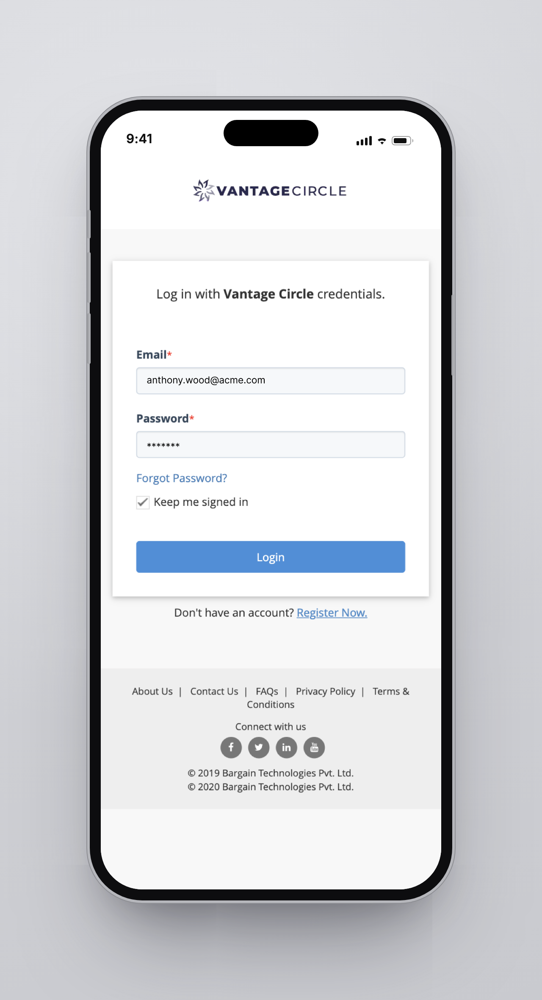
1 · Scan the QR on the card and log in with work credentials - no app to install, no onboarding to survive.
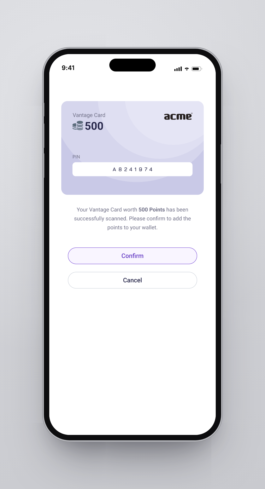
2 · The card is recognised instantly: 500 points, one tap to add them to the wallet.
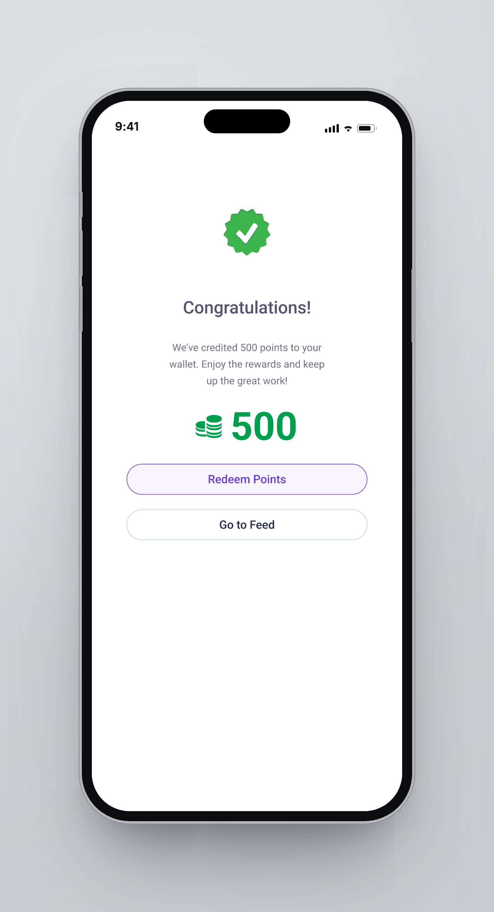
3 · Instant, visible feedback - the points land in the wallet on the spot.
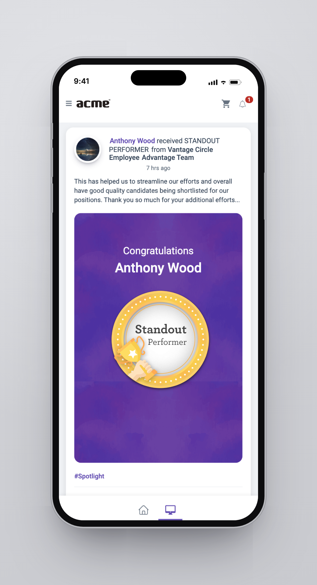
4 · The moment that matters: the Standout Performer badge and the manager's personal message.
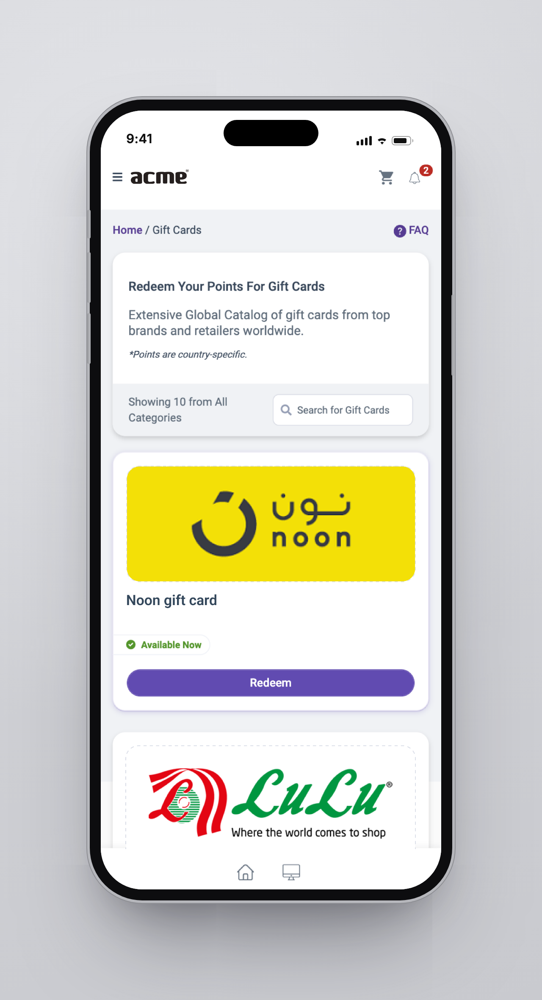
5 · Points become gift cards from brands employees actually know and use.
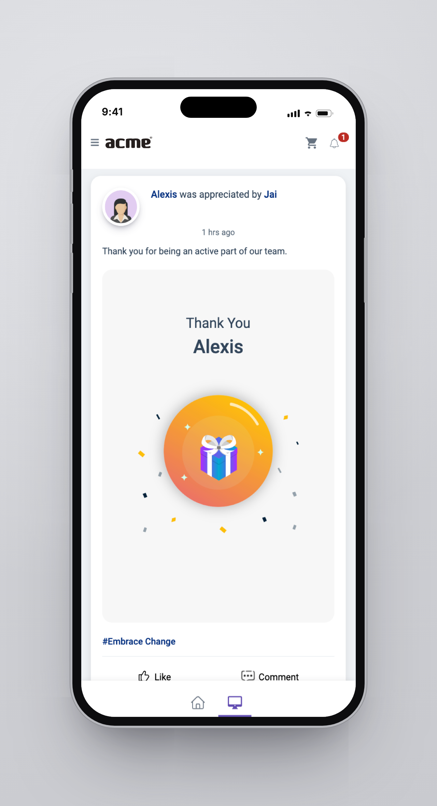
6 · The appreciation lands on the social feed - recognition is public, pride is shareable.
A factory floor means shared devices, gloves, glare and patchy signal - so the unhappy paths were designed with the same care as the happy one:
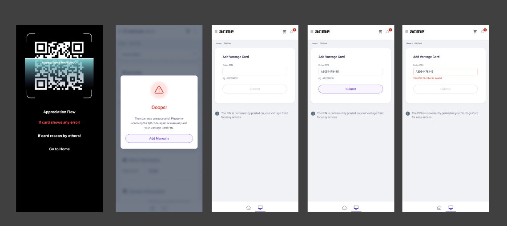
When the scan fails, the card is one typed PIN away from working - and an invalid PIN says so in words, not codes.
Six months later, the shift was dramatic.
By designing for our users - all of them - we hit significant business goals.
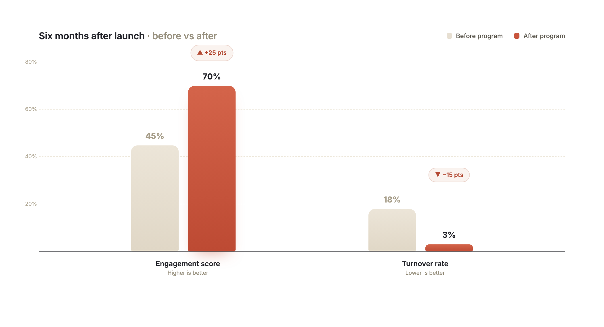
The program drove a significant positive shift in both employee retention and engagement.